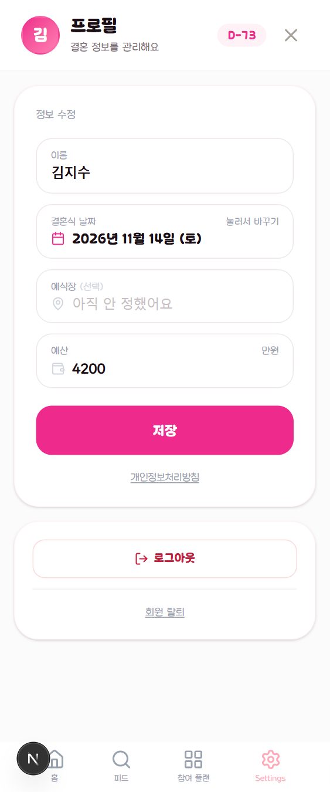

C안 · 09
프로필
이미 분홍 머리가 있는 화면이라 5안 중 가장 적게 바뀝니다. 면 규격을 맞추고 입력 칸을 SEED 채움 필드로 바꾸는 정도입니다. 다만 지금 머리글 오른쪽의 X 는 이 화면이 탭 목적지라 갈 곳이 애매합니다.
지금/user · 실제 캡처

C안면 규격 + 채움 필드
김
지수 · 현우
결혼식까지 74일
X 버튼 제거
이 화면은 탭 목적지라 "닫으면" 갈 곳이 정해져 있지 않습니다. 나가는 길은 이미 하단 탭바가 넷 다 갖고 있습니다.
D-day 자리
지금은 분홍 알약이 제목 옆에 있습니다. 면 위에서는 알약이 배경과 비슷해져 안 보이므로 부제 문장으로 내립니다 — 웹에서 머리글 띠 한 곳에만 두기로 한 것과 같은 이유입니다.
입력 칸
테두리 카드에서 회색 채움으로. 라벨은 지금처럼 항상 띄웁니다 — placeholder 만 있으면 값을 넣는 순간 무슨 칸인지 사라집니다.
지키는 것
로그아웃 2단 확인을 유지합니다 — 저장된 플랜 데이터까지
지웁니다. 날짜는 DatePickerModal 로만 고칩니다.
저장 버튼 이름은 저장 입니다(이미 프로필 수정 화면인데
"프로필 수정"이라 쓰면 무엇이 일어날지 애매합니다).
공지 사항 및 소개는 되살리지 않습니다.
탈퇴
로그아웃 카드 안에 묶여 있던 것을 구분선 아래로 내립니다. 되돌릴 수 없는 동작이라 로그아웃과 같은 무게로 보이면 안 됩니다.